Hike: Montara Mountain North Peak Loop
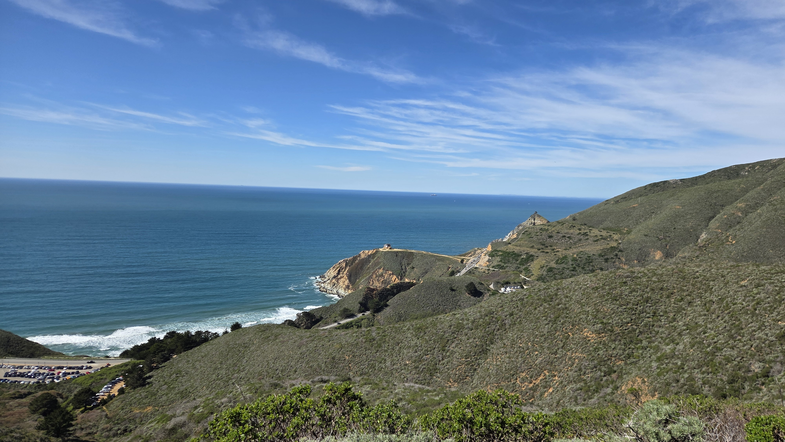
California is peppered with state and national parks, but sometimes it is off the beaten “trail” that you’ll find some of the best, not to mention free, experiences. Such is the case with Montara North Peak. On the meandering stretch of coastal Highway 1 between Half Moon Bay and Pacifica lies a small pull-out by the roadside. Just beyond the entrance is a hike that trades fitness and dedication for outstanding views, variety, and isolation from more crowded, popular locations (not naming any names, Mission Peak…)
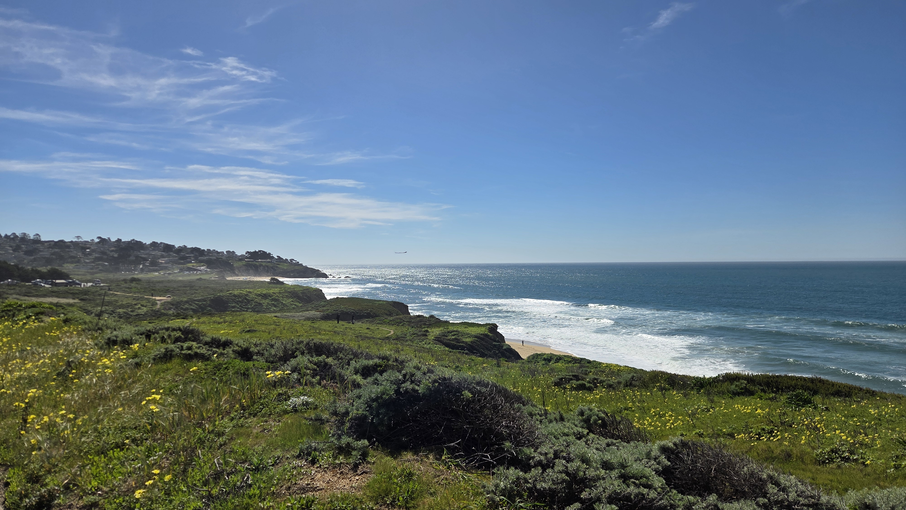
Word to the wise: If the picture below leaves you the least bit concerned about steepness or even terrain accessibility, you may wish to opt for a milder hike, of which there are many in this neck of the woods.
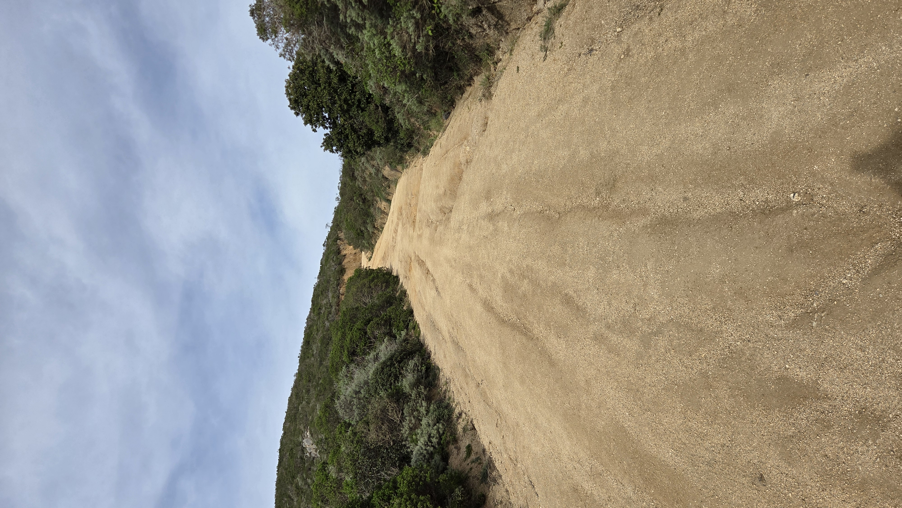
Now that the disclaimer has been made, here’s what you’ll see on your 4–5 hour journey to the top of this mountain and the base of its radio tower. Parking can be a bit scarce, but I was able to leave my car across the highway in a separate pull-out area (just take care when crossing the road).
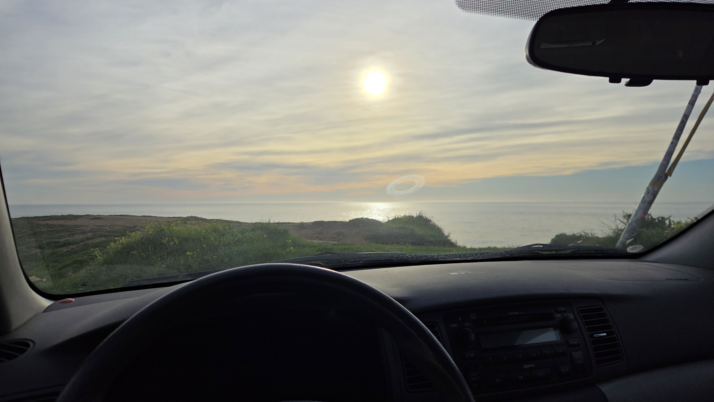
At the entrance you’ll be greeted with a dirt-gravel path and a reminder that you may see horses, dogs, and bikes, at least on the early portions of this trail (latter areas prove too unmanageable for that type of traversal). Before you enter, turn around and take a gander at the lovely ocean views that only this region can offer.
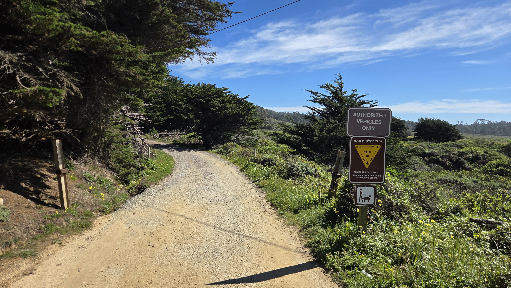
The trail then enters a dense woodland filled with Blue Gum Eucalyptus and a babbling stream. This early portion is flat and quite tranquil—you can expect the temperature to be a bit cooler here in the shade. You’ll come upon a ranch with horse boarding on your right and some parkland facilities to the left. Once you reach the clearing, it is time to begin your ascent.
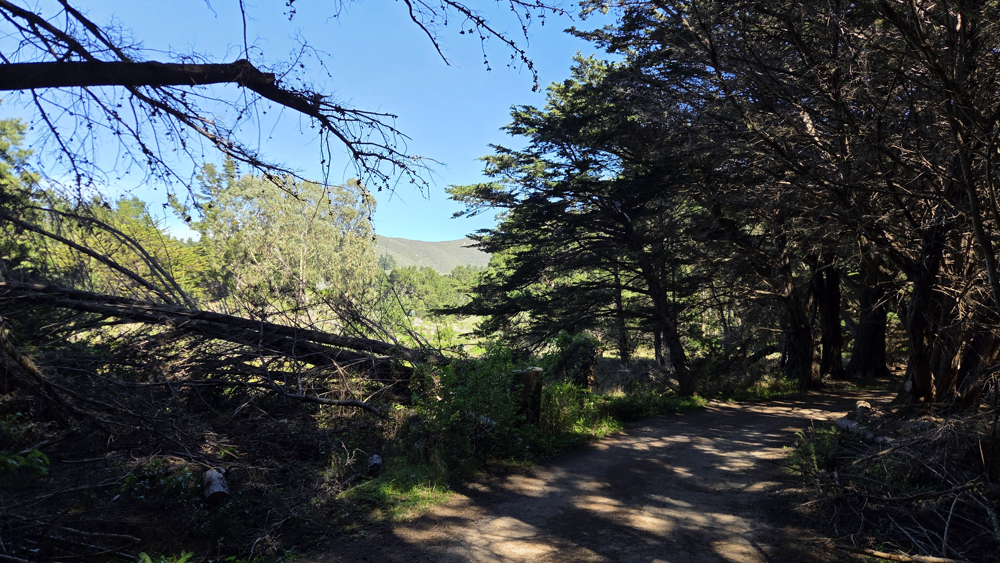
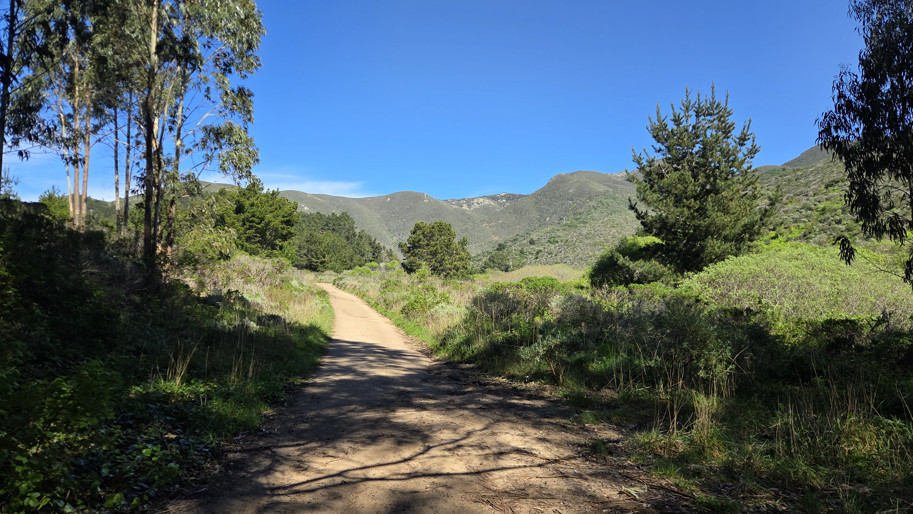
At each major milestone, be sure to look back at a new view of the coastline headed back south towards Santa Cruz. The views are incredible and just keep getting better. On a clear day, you will be able to see the Farallon Islands in the distance from higher ground. Just keep going!
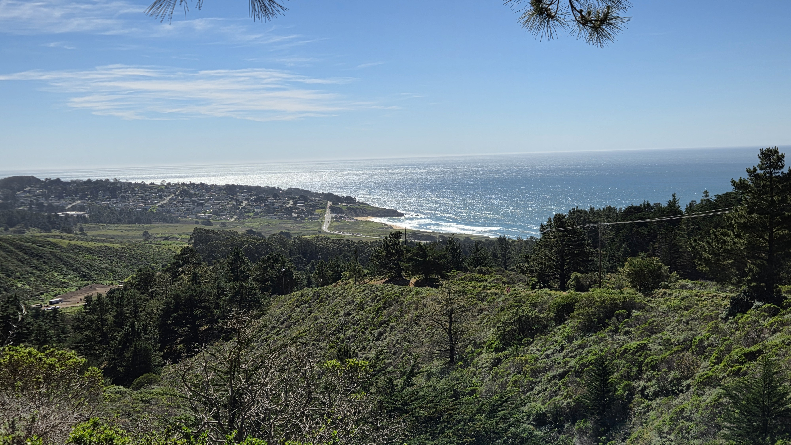
Looking north, you’ll catch unique views of Pacifica as well as recognizable landmarks in San Francisco! Among these, Baker Beach and the Golden Gate Bridge are likely to catch your eye. Unfortunately, no photo can truly do it justice.
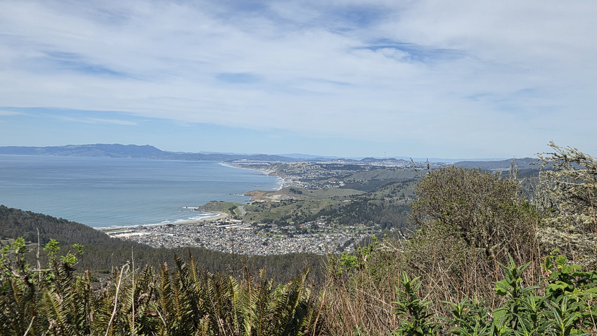
Continuing on, the landscape becomes a bit rockier but much of what is seen is not accessible from the trail. Just enjoy the sights. After some strenuous steps, you’ll reach the summit, where there is some information about the radio communication tower there and a nice spot to sit and take in the panorama.
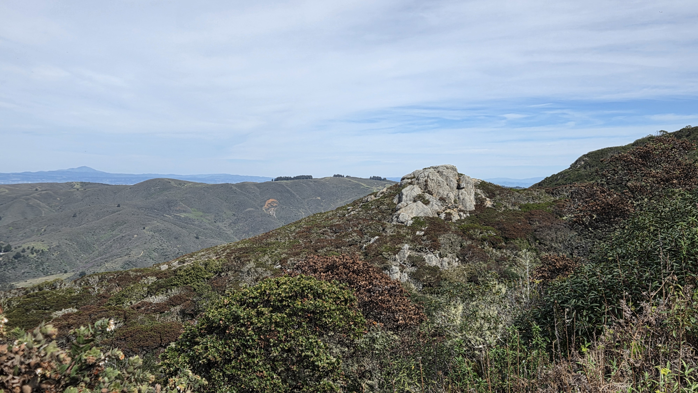
Another reason to choose this hike on a sunny California day is that Montara Beach is located at its base. After making your way back down, you can give your legs a break by plopping down on the sand at this particularly scenic shoreline park and take in the sunset if you are so inclined.
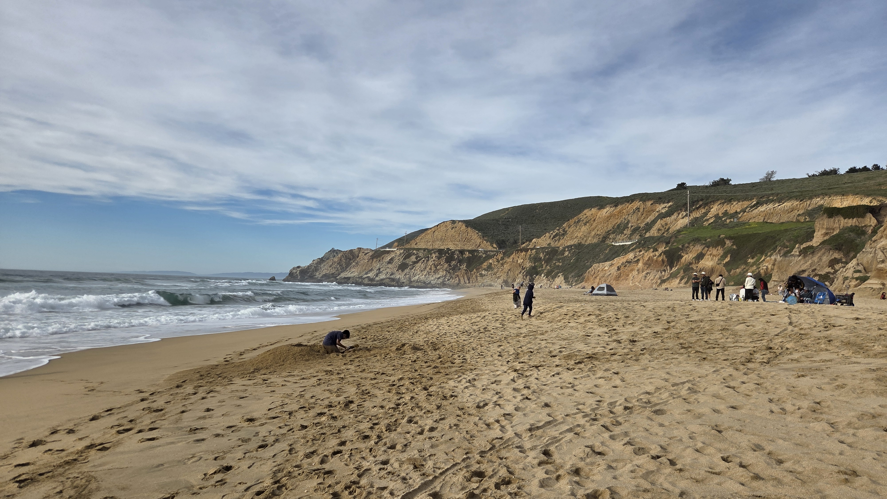
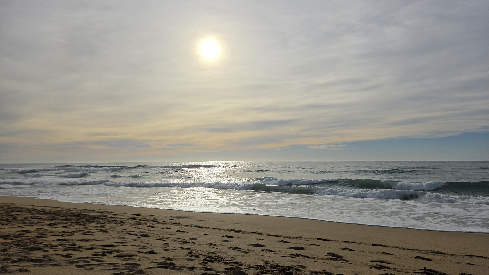
If you’re still not sold, San Francisco is a 20–30 minute drive northward, through more shimmering coastal views, rugged sediment where the road was carved, and more groves of trees and small towns. Chinatown is always hopping, and on my visit I decided to partake in a classic fried rice at Far East Café, which was delectable alongside a hot oolong tea.
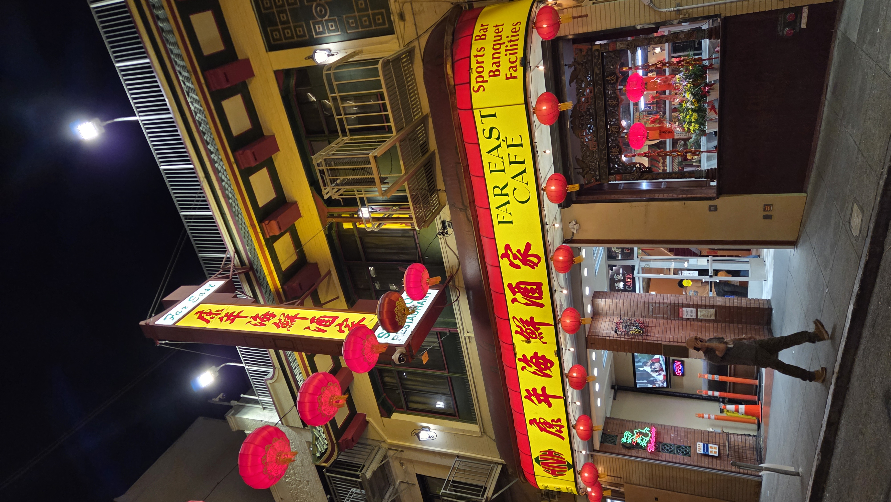
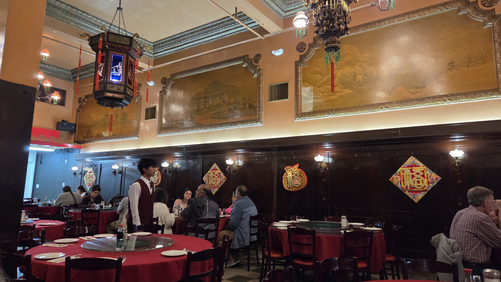
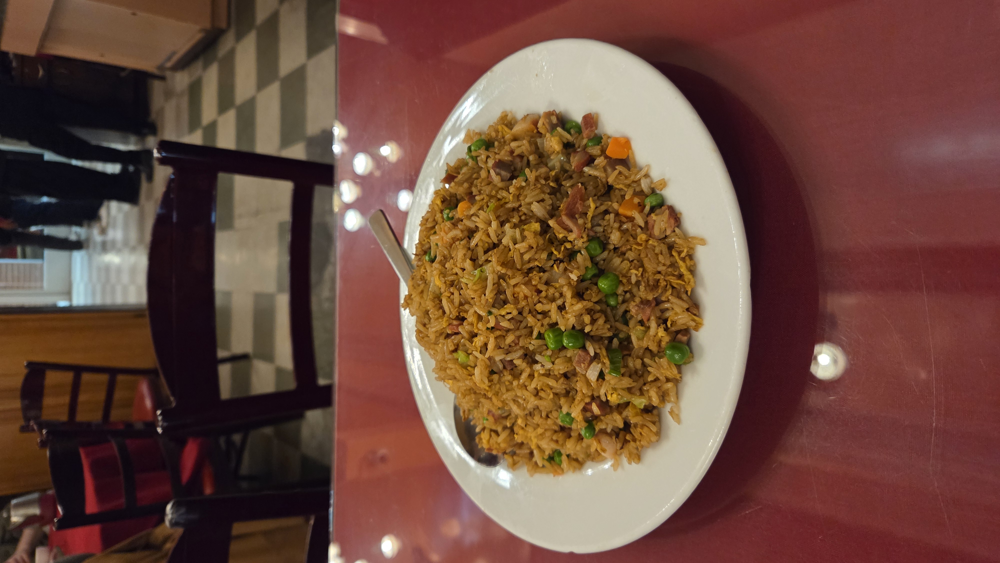
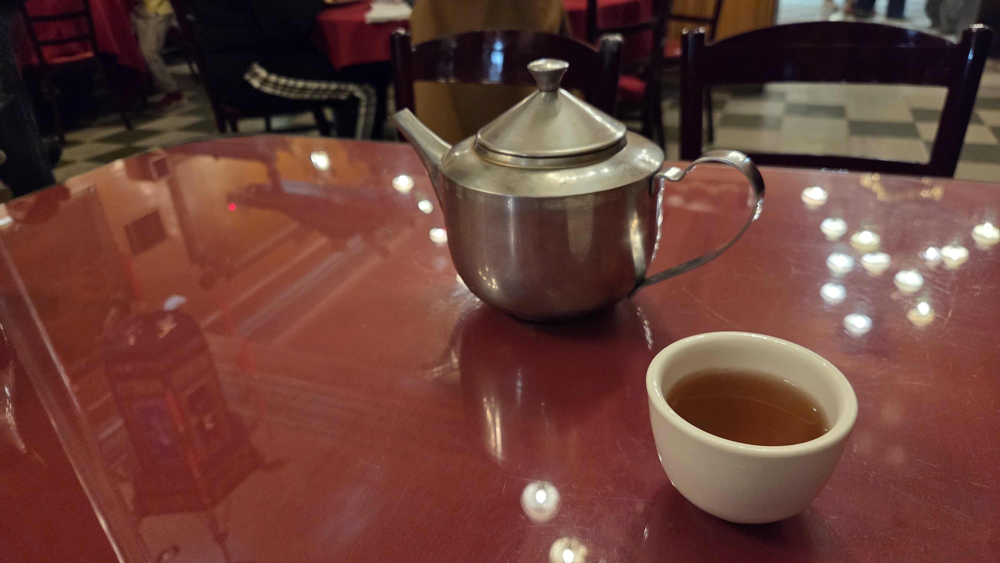
Next door was a shop with antiques and other chachkas (fans, Mah Jong sets, lucky medallions).
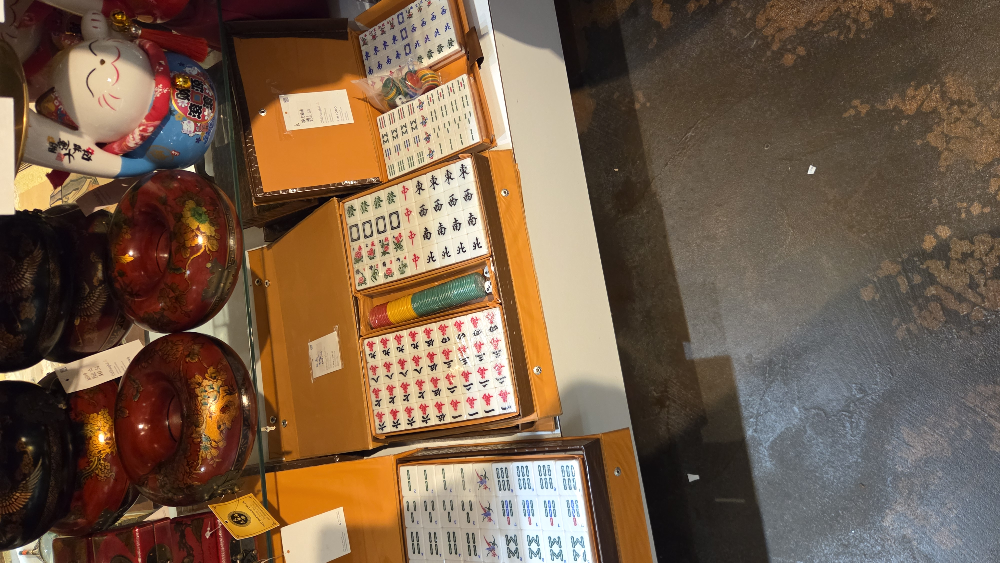
Leave a Comment